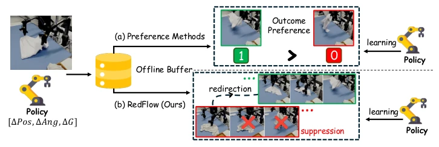
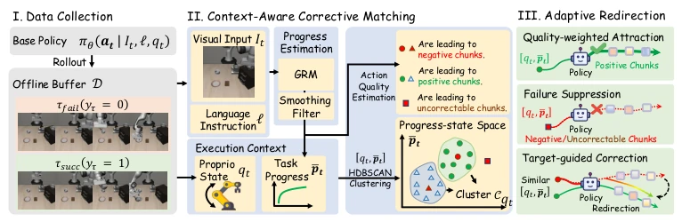
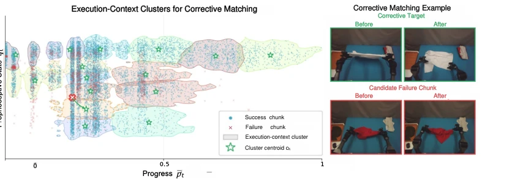
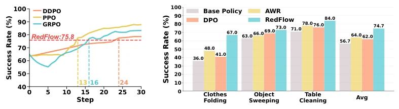
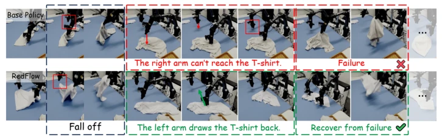

This paper opens a new avenue for 'offline tuning' of Flow-matching VLA. The core of RedFlow lies in treating 'failure' as valuable rather than discarding it directly. Unlike traditional offline RL that focuses solely on successful trajectories, it finds 'proxies' for failed actions through context matching and uses successful actions to correct them. This approach is quite clever, avoiding the hassle of online interaction, and its sample efficiency significantly outperforms online methods like PPO. Real robot experiments even exhibited recovery behaviors absent in baselines, such as using the other hand to pull back dropped clothes. However, relying on a pre-trained GRM to estimate progress is a potential risk; if the GRM is inaccurate, the correction target becomes misaligned. Moreover, offline methods ultimately cannot cope with extreme distributions completely unseen in the training set, a point it does not explicitly state. Overall, it is a solid engineering improvement, but the theoretical upper limit may still be constrained by the quality of offline data, worthy of further exploration of uncertainty awareness.
VLA policy deployment is prone to error accumulation due to distribution shift, which is a common pitfall of imitation learning. Existing offline RL methods either ignore failure data [8] or only perform preference optimization at the trajectory level [10, 11], lacking action-level guidance. This leads to the robot not knowing exactly which step went wrong and how to fix it. Although human intervention can solve this, it is not scalable. Therefore, the core problem the authors aim to solve is: how to extract high-density action-level correction signals from failure trajectories under a pure offline setting, without requiring additional human annotations or online interaction. Existing methods lack granularity, unable to precisely locate the specific action steps causing failure, leading to low learning efficiency. Additionally, flow matching strategies typically treat all actions as valid samples for imitation; when handling mixed-quality data, they easily learn suboptimal behaviors or over-correct, which is also a key technical difficulty needing resolution.

Figure 1: RedFlow combines two properties that prior methods lack: learning from failures and action-level guidance. (a) Preference methods learn from failures but only at the trajectory level, signaling what to avoid without action-level corrections. (b) RedFlow identifies failure-inducing actions within failed rollouts and redirects them toward corrective targets derived from successful experiences, providing dense action-level supervision.
The overall process is divided into three steps. First is data collection, storing successful and failed rollouts into an offline buffer. Then is Context-Aware Corrective Matching, using GRM to estimate task progress, combining proprioceptive states to define execution context, using HDBSCAN for clustering. Finding successful actions within the cluster where failed actions reside as correction targets, this solves the fine-grained localization problem. Finally is Adaptive Redirection Objective, which is the core. It improves the Flow Matching loss function, divided into three parts: quality-weighted attraction ($L_{att}$) strengthens good actions, failure suppression ($L_{sup}$) pushes away bad actions, goal-guided correction ($L_{cor}$) redirects recoverable failures to correction targets. This retains data support while clarifying the direction of improvement. Specifically, $L_{att}$ is weighted according to advantage estimation, $L_{sup}$ uses hinge loss to prevent approaching bad actions, $L_{cor}$ provides specific correction vectors. This asymmetric design avoids the trap of uniform imitation, allowing the policy to learn robust recovery behaviors under velocity field parameterization. Additionally, this method distinguishes between correctable and non-correctable failures, only suppressing non-correctable ones, increasing training stability.

Figure 2: RedFlow pipeline. RedFlow consists of three stages: (I) Data Collection, where success- ful and failed rollouts are stored in an offline buffer; (II) Context-Aware Corrective Matching, which leverages a pre-trained GRM to estimate task progress, combines progress estimates with proprioceptive states to define execution contexts, clusters similar contexts with HDBSCAN, and derives corrective targets from positive actions observed in matched contexts; and (III) Adaptive Redirection Objective, where asymmetric flow matching reinforces high-quality chunks, suppresses negative chunks, and redirects correctable failure-inducing chunks.

Figure 3: Context-aware corrective matching in execution-context space. RedFlow represents each action chunk by its execution context (˜qt, ¯pt), combining the robot’s proprioceptive state and task progress. Action chunks with similar contexts are grouped into execution-context clusters. Given a candidate failure chunk (red cross), RedFlow retrieves matched successful chunks from the corresponding cluster and uses them as corrective targets. The real-robot example illustrates the rationale: although the successful and failure chunks begin from similar contexts, only the matched successful chunk flattens the garment, while the failure chunk leaves it crumpled.
Tested on the LIBERO benchmark and three real robot tasks. Comparison baselines include offline methods such as AWR, DPO, and online methods such as PPO, GRPO. In results, RedFlow improved average success rate by 12 percentage points on LIBERO, and real robots from 56.7% to 74.7%. In terms of sample efficiency, it achieved online method performance with 10 times fewer trajectories. Ablation studies prove success/failure data complementarity, and correction target separation is important. In real tasks, recovery behaviors absent in baselines even appeared, such as using the other hand to pull back dropped clothes. On LIBERO-Spatial, RedFlow achieved performance that PPO etc. require 13000 trajectories to achieve using only 1536 trajectories, proving the effectiveness of structured failure reuse. Additionally, on the clothes folding task, the improvement was largest, from 36% to 67%, showing its potential in complex bimanual manipulation.

Figure 5: Sample efficiency comparison on LIBERO-Spatial against on-policy RL baselines.

Figure 7: Qualitative correction behavior on clothes folding. The base policy fails when the T-shirt falls out of the right arm’s reach, while RedFlow recovers by using the left arm to pull the cloth back and continue folding.